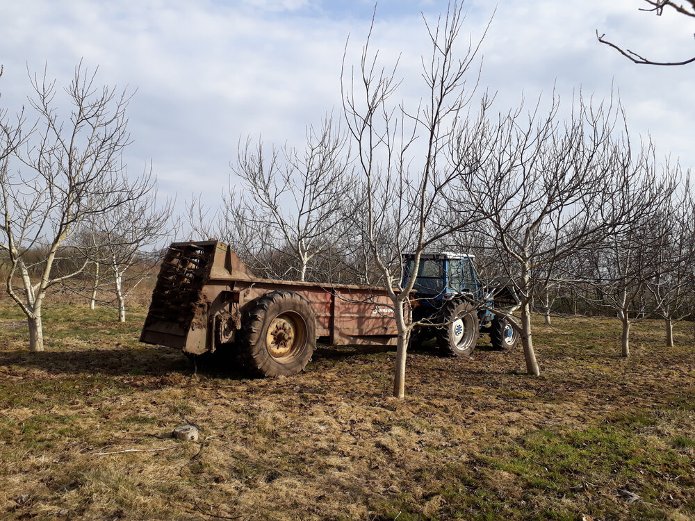
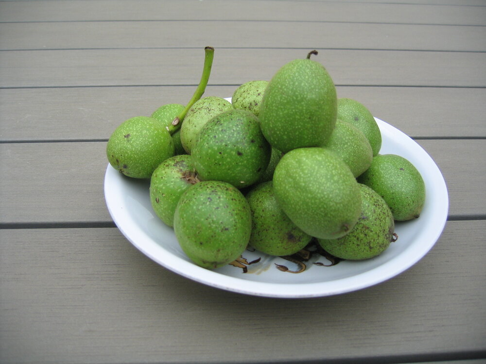
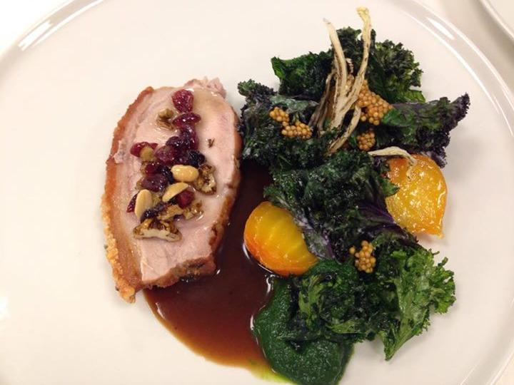
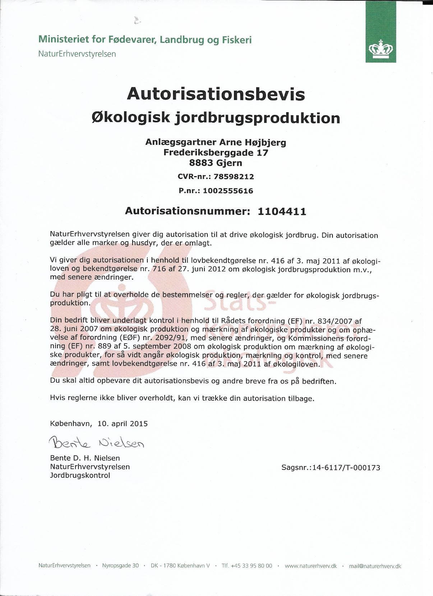

Plantning

Efter en rejse til New Zealand, hvor jeg fik kendskab til dyrkning af valnødder,
blev der i år 2000 plantet ca. 300 valnøddetræer (Juglans Regia) på 1 hektar ved sportspladsen
ved siden af den for længst nedlagte skole lidt uden for Sejling ved Silkeborg.
Træerne var frøformerede og købt på en lokal planteskole. Nødderne som planterne kommer fra,
er fra forskellige lande i Europa, for at finde ud af, hvilke planter, der passer bedst til lokaliteten.
Vækst
Det viste sig, at valnøddetræerne kunne lide stedet og groede godt til og der er nu en skov af 6-8 meter høje træer. Efterfølgende er der plantet yderligere 1 ha til med valnødder - denne gang med podede træer - som snart vil begynde at give mulighed for endnu større høst.
Anvendelse og afsætning

Der er de seneste år blevet solgt både grønne, friske og modne valnødder fra plantagen.
Grønne valnødder anvendes til kryddersnaps, sirup og chutney mv. Desuden anvendes og sælges grønne valnødder til indfarvning af stoffer og garn.
De friske valnødder er solgt til flere kendte restauranter - deriblandt Noma.
Både grønne, friske og modne valnødder afsættes til engrosfirmaer og private.
Økologiautorisation
Nødderne er autoriseret økologiske pr. 10. april 2015 med autorisationsnr. 1104411.